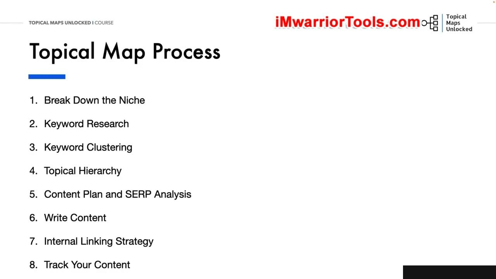
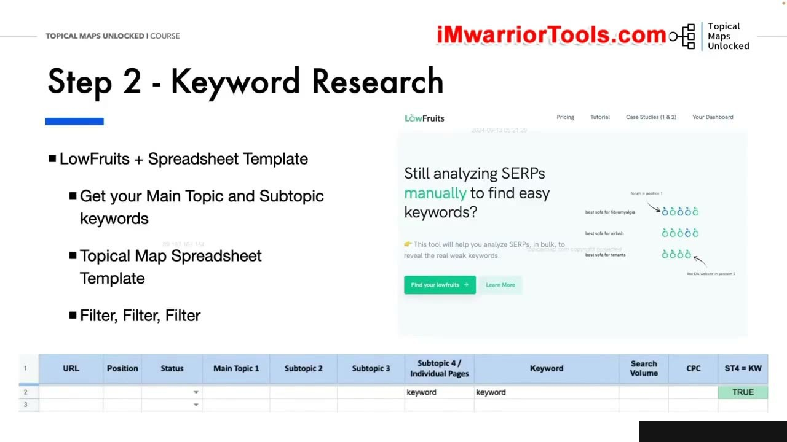
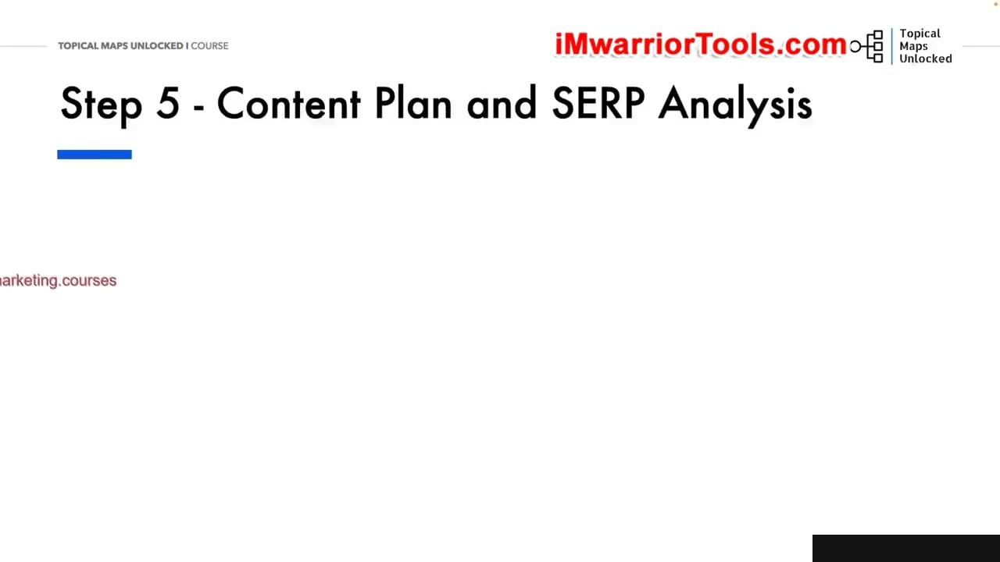
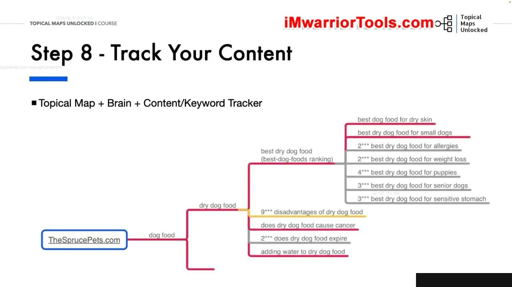

Putting It All Together – Topical Maps
Quy trình 8 Bước Tiêu chuẩn Xây dựng Topical Map
Trong bài học tổng kết thứ hai, Yoyao tập trung chuyên sâu vào công cụ cốt lõi nhất của toàn bộ khóa học: Topical Maps. Ông hệ thống lại 8 bước thực hành tiêu chuẩn không thể thiếu:
- Nghiên cứu và phân tích thị trường ngách (Niche Research & Analysis).
- Khai thác và phân rã các chủ đề chính cùng chủ đề phụ (Main Topics & Subtopics Breakdown).
- Nghiên cứu đối thủ cạnh tranh và trích xuất sitemap (Competitor Sitemap Extraction).
- Thu thập toàn diện kho từ khóa ngữ nghĩa bằng đa công cụ (Keyword Gathering).
- Gom cụm từ khóa theo ý định tìm kiếm và SERP similarity (Keyword Clustering).
- Thiết kế hệ thống phân cấp chủ đề và cây cấu trúc Silo (Topic Hierarchy & Mind Mapping).
- Chuyển hóa sơ đồ thành kế hoạch sản xuất bài viết (From Map to Content Plan).
- Thiết lập kiến trúc trên CMS và thực thi chiến lược liên kết nội bộ (CMS Architecture & Internal Linking).
Nắm vững 8 bước này, bạn có thể tự tin triển khai Topical Map cho bất kỳ ngành nghề nào, từ các ngách hẹp ít cạnh tranh đến các thị trường khổng lồ.

Bộ Công cụ Nền tảng và Bảng tính Quản lý Thực chiến
Yoyao ôn lại bộ công cụ tối ưu cần có khi bắt tay vào làm Topical Map thực tế:
- Công cụ nghiên cứu: Ahrefs, Semrush, LowFruits, Google Keyword Planner và Google Search Suggestions.
- Công cụ phân tích SERP: SERP Similarity Tool để kiểm tra chính xác liệu hai từ khóa có thể gom chung vào một bài viết hay bắt buộc phải tách riêng.
- Bảng tính quản lý trung tâm: Google Sheets chuẩn hóa với các cột: Silo Name, Main Topic, Subtopic, Target Keyword, Search Volume, Search Intent, URL Slug, Anchor Text và Trạng thái xuất bản.
Sự kết hợp giữa công cụ tự động và tư duy phân tích của con người tạo nên một bản kế hoạch hoàn hảo không thể bị đánh bại.

Nguyên tắc Vàng trong Gom cụm Từ khóa và Tránh Ăn thịt Từ khóa
Yoyao đặc biệt lưu ý về tiêu chuẩn xác định ý định tìm kiếm (Search Intent) khi gom nhóm từ khóa:
Nếu SERP của hai từ khóa có từ 3 đến 4 kết quả trùng nhau trở lên, chúng thuộc về cùng một ý định tìm kiếm và phải được đưa vào một bài viết duy nhất. Nếu kết quả hoàn toàn khác biệt, chúng bắt buộc phải là hai bài viết riêng biệt.
Tuân thủ nghiêm ngặt nguyên tắc này giúp triệt tiêu hoàn toàn hiện tượng tự cạnh tranh từ khóa (Keyword Cannibalization), giúp dòng chảy sức mạnh trang web tập trung tối đa vào từng bài viết mục tiêu.

Chuyển giao từ Bản đồ Tư duy sang Cấu trúc Website Thực tế
Bước cuối cùng của quy trình là chuyển thể sơ đồ tư duy thành cấu trúc sống động trên môi trường website WordPress:
Mỗi nhánh chính trở thành một Danh mục mẹ (Parent Category), các chủ đề con trở thành Danh mục con (Child Category) hoặc các bài viết trụ cột (Pillar Articles), và các bài viết chi tiết hỗ trợ (Supporting Posts) được liên kết chặt chẽ theo mô hình bánh xe Silo.
Cấu trúc này tạo thành một mê cung ngữ nghĩa hoàn chỉnh dẫn dắt Google Bot thu thập dữ liệu một cách dễ dàng và lập chỉ mục nhanh chóng toàn bộ trang web.

Nguồn và đối chiếu
- Topical Maps Unlocked 2.0 · 11-From Theory to Practice Module/02-Putting It All Together – Topical Maps.mp4 (Video bài học chính).
- Bản tiếng Anh không có video riêng cho bài học này; nội dung đối chiếu trực tiếp từ slide và video chính.